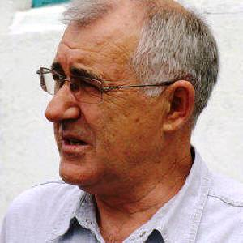
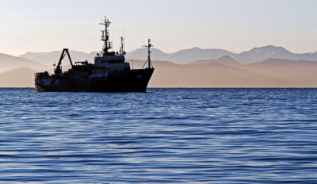
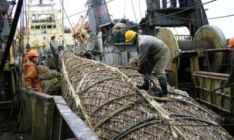
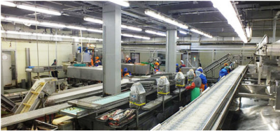
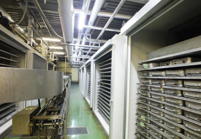
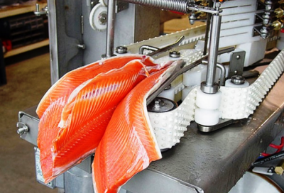

Организация ОБЩЕСТВО С ОГРАНИЧЕННОЙ ОТВЕТСТВЕННОСТЬЮ "РЫБОЛОВЕЦКИЙ КОЛХОЗ ИМЕНИ Г.КОТОВСКОГО" зарегистрирована 12 марта 2012 года по адресу 694071, Сахалинская область, Долинский район, село Стародубское, улица Лобанова, 1 А.
Компании был присвоен ОГРН 1126504000336 и выдан ИНН 6503013720.
Немного истории.
На восточном побережье Охотского моря в заливе Терпения в небольшом селе под названием Стародубское местные жители многие десятилетия занимаются как морским, так и речным рыболовством. Вблизи Стародубского проистекает река Найба, содержащая множество нерестовых мест для лосося. Удобное географическое положение села оказалось очень благоприятным для возникновения здесь рыбообрабатывающего комбината, который, впоследствии, стал основным градообразующим предприятием Стародубского.
Еще в 30-е годы японцами здесь был построен пирс-причал. Японцы на небольших шхунах добывали лосось, солили в бочках и отправляли в Японию.
После 1945 г. в село стали прибывать партии советских сезонных рабочих, а в начале 50-х на месте японского пирса было построено первое здание консервного цеха.
В 1963 г. образовался колхоз им.Котовского. Стал формироваться малый флот. МРС – малый рыболовный сейнер считался главным морским средством для добычи рыбы. Постепенно строились другие вспомогательные цеха, склады.
В 1994 году на базе рыболовецкого колхоза им.Г.Котовского была создана Рыбопромышленная корпорация «Стародубское».
Сегодня корпорации «Стародубское» принадлежит рыбоперерабатывающий комплекс, состоящий из консервного производства и цеха обработки. Мощности позволяют переработать в сутки 70 тонн рыбы. Также имеется коптильное производство, 3 холодильника.Корпорация выпускает около 40 видов различной рыбной продукции.
В 2012 году произошло переустройство рыбоперерабатывающих предприятий холдинга, установлено новое современное оборудование для икорного цеха, морозильного цеха.
Общая мощность переработки: порядка 400 тонн в сутки (оценивается, что мощность переработки на 25% выше возможности вылова). Холодильные мощности: 5000 тонн.
Корпорация «Стародубское» - важное звено в рыбной отрасли Сахалинской области с успехом выполняющая свою социальную роль, которую трудно переоценить. На предприятиях корпорации нет ни одного работника из стран ближнего зарубежья, как и нет людей с материка. Работой, в первую очередь, обеспечиваются жители самого Стародубского. Людей с Долинского района, а также области, совсем немного. На двух рыбоперерабатывающих заводах работают около 400 человек, занятых рыбообработкой. Плюс 150 рыбаков.
За 2016 год прибыль компании составила 23.77 млн.руб.
По самым скромным подсчетам, от рыбы, добываемой и обрабатываемой холдингом, только непосредственно кормятся 1650 человек (если считать, что в каждой семье по три человека). Рыбопереработка – это дело сезонное. Но в планах холдинга стоит и организация круглогодичной работы, чтобы обеспечить занятость людей в зимний период. На территории ООО «РК имени Котовского» планируется строительство цеха по ручной выработке филе из морской рыбы высочайшего качества. Подобного производства на береговых предприятиях Сахалина еще нет.

Цитата из интервью с генеральным директором колхоза А.И. Шушпановым:
«Для нас главное – обеспечить работой местное население. В основном, у нас трудятся жители Долинского района – из Стародубского, Долинска, Углезаводска, Быкова, Взморья… Есть несколько человек из других районов – из Холмска, например. В общем, местных, сахалинцев, примерно 92-93 процента. Остальные – из других регионов России: Амурская область, Хабаровский край. Приезжают к нам на путину и бывшие работники рыбколхоза, живущие сейчас на материке. И хотя они, так сказать, уже не местные, назвать их чужими я не могу: здесь для них всё родное. Ну и как их не принять на путину? А почему едут именно к нам, а не в какую-нибудь другую фирму – видимо, потому, что у нас лучше, у нас стабильнее. Ну а если вспомнить ваш первый вопрос, то, вероятно, и потому, что у нас – всегда честно».
Как происходит рыбопереработка?

Рыба и морепродукты являются важнейшими составляющими пищевого рациона человека. Эти компоненты - источники белков, жиров, минеральных веществ, содержащие такие необходимые для организма человека элементы, как калий, кальций, магний, железо, фосфор, а также целый комплекс ценных витаминов.
В России основой производства пищевой рыбной продукции являются рыбодобывающие и рыбоперерабатывающие предприятия Дальнего Востока с 60-ти процентной долей. Лидирующие позиции по выпуску консервной продукции занимают Западный бассейн (около 57 %) и Дальний Восток (более 30 %). Лидерами в производстве кормовой муки являются предприятия Дальнего Востока (более 76 %) и Северного бассейна (около 14 %), в выпуске кормовой рыбы и отходов от разделки для звероводческих хозяйств — предприятия Северного бассейна (более 70 %), Дальнего Востока (около 16 %) и Калининградской области (около 9 %).

При выпуске рыбной продукции, необходим рациональный подход к использованию рыбы и других продуктов, важно не только внедрение новых производственных технологий и высокотехнологичного оборудования, но и соблюдение правил транспортировки, хранения, приготовления пищевых рыбных продуктов и т.д. Поэтому в задачу рыбной промышленности входит не только получение высококачественного сырья и рыбных продуктов, но и сохранение их без потерь.
Процесс переработки рыбы и морепродуктов проходит в несколько стадий. Это способствует созданию большого количества малых предприятий, которые, используя высококачественное сырье, передовые технологии, современную упаковку, могут производить отдельные виды продукции, при необходимости постоянно расширяя ассортимент.
Классификация рыбообрабатывающих предприятий.
Предприятия по переработке рыбы можно условно разделить на три категории:
Цеха по переработке рыбы, находящиеся в непосредственной близости к местам добычи.
Такие предприятия осуществляют первичную обработку сырья, очищают его, охлаждают до минус 5 градусов по Цельсию, замораживают или солят. Затем рыбу и морепродукты отправляют на дальнейшую переработку в виде полуфабриката или целиком. Преимущественно заготовительные цеха располагаются в Дальневосточном, Северо-Западном и Калиниградском бассейнах - именно там добывается 95% всей рыбы идущей на переработку.
Заводы по переработке рыбы, находящиеся вблизи с пунктами оптовой торговли и реализации.
На этих предприятиях происходит выпуск промышленных заготовок. Предприятия скупают сырец у предприятий первичной обработки, а затем оптом продают полуфабрикат предприятиям конечных продуктов.
Предприятия, находящиеся в местах конечного сбыта продукции.
Здесь полуфабрикаты и рыбное сырье становятся готовым продуктом, который затем поступает в торговые сети. Именно в этом сегменте больше всего мелких и средних предприятий.
Технологии переработки рыбного сырья.
Рыба и морепродукты проходят длинный путь от места промысла и до стола конечного потребителя. Процесс переработки рыбы и морепродуктов напрямую зависит от того, каков требуется конечный вид продукта, будь то охлажденный, замороженный, вяленый, консервированный, соленый, копченый или продукт в живом виде.

Если речь не идет о живой рыбе, то любое рыбное сырье, чтобы оно осталось свежим до следующей стадии обработки либо охлаждают, либо замораживают. Охлаждение рыбы - это процесс понижения ее температуры до минус 1-2 градусов по Цельсию. Для этого существуют три способа - поместить в холодильник, засыпать льдом или положить в холодный рассол. При помещении в холодильник портится внешний вид рыбы, поэтому наиболее часто рыбу погружают в мелко колотый лед.

В охлажденном виде рыба может храниться не более 5 суток, что , конечно, значительно снижает возможности по ее транспортировке и обработке. Для того, чтобы рыба и морепродукты дошли до потребителя, производится их заморозка в холодильниках до - 18 градусов по Цельсию. Холодильное оборудование для переработки рыбы делят на оборудование непрерывного и периодического потока. Крайне важно, чтобы воздействие отрицательных температур на продукт, находящийся в процессе охлаждения, замораживания, транспортировки и хранения, было постоянным вплоть до его реализации.
Обработанная рыба (свежая, охлажденная или замороженная) разделяется и в зависимости от сорта, размера и вида, направляется на разделку, на маринование и соление, на вяление или сушку, на копчение, на производство консервов или пресервов.

Поступившее на место переработки сырье сначала размораживают, если это необходимо, а затем разделывают используя специальное оборудование. Разделка - процесс практически безотходный - филе рыбы или ее тушка выходит из одного конца конвейера, а отходы - с другого.
Продукты переработки рыбы (крупные кости позвоночника, шкура и т.д.) используются в производстве костной муки, которую активно скупают производители комбикормов. Очевидно, что переработка отходов рыбы - не менее прибыльное дело, чем работы с самой рыбой.
Для предприятий рыбопереработки очень важны и соблюдение технологии переработки и стремление к максимально эффективному использованию сырья, при повышении качества продукции.